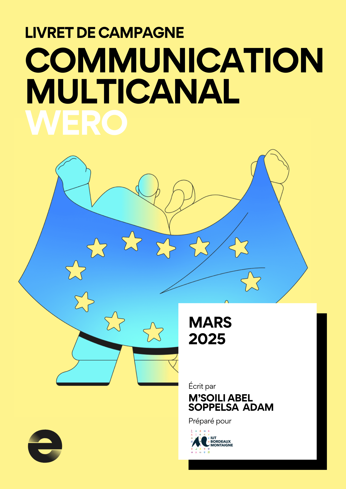
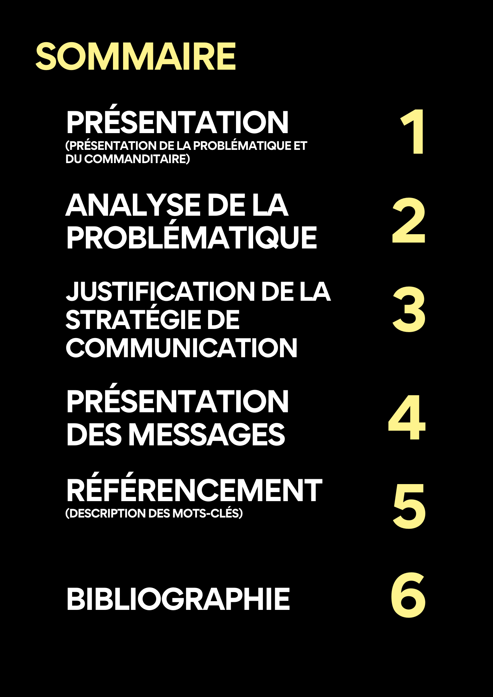

Wero : Arrivée en France
Il y a quelques mois, Paylib a laissé sa place à Wero, nouveau service de virement instantané et de portefeuille en ligne. Dans le cadre d’un projet scolaire, nous avons été missionné (avec mon collègue Abel M’SOILI) pour la promotion de la nouvelle application. Avec la réalisation d’un livret de campagne et de 5 messages (sur différents canaux), nous avons pu fournir un travail complet et professionnel.
Compétences développées :
- Analyse stratégique de repositionnement de marque : Compréhension des enjeux liés à la transition d'une marque établie (Paylib) vers une nouvelle identité (Wero) dans le secteur des services financiers numériques.
- Élaboration d'une stratégie de communication multicanale : Conception d'une campagne cohérente déployée sur différents canaux pour maximiser la portée et l'impact du message.
- Conception éditoriale : Réalisation d'un livret de campagne structuré présentant la stratégie, les objectifs et les différents éléments de communication.
- Travail en équipe : Collaboration efficace avec Abel M'SOILI pour atteindre les objectifs du projet et respecter les délais imposés.
- Gestion de projet professionnel : Organisation et exécution d'un projet complet de communication marketing, de la phase de conception jusqu'à la livraison finale.
Cette mission m'a permis de développer des compétences pratiques en marketing digital et communication, particulièrement dans le secteur fintech en pleine évolution.
Visualisez ou téléchargez le PDF complet en cliquant dessus.
 